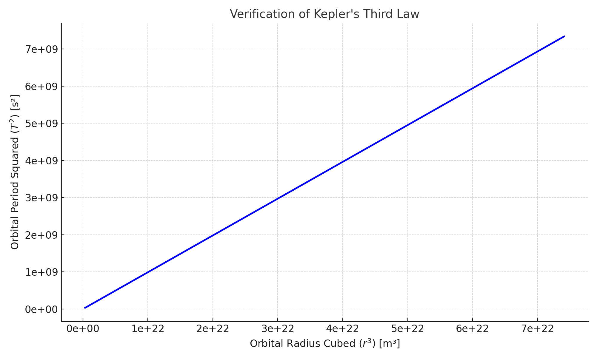

Problem 1
Kepler's Third Law: Orbital Period and Radius
"The harmony of the world is made manifest in the laws of nature." – Kepler
What Are We Exploring?
We aim to understand how a planet or satellite’s orbital period (how long it takes to complete an orbit) is related to its distance from the central body.
This brings us to Kepler’s Third Law:
Where:
-
\(T\) = Orbital period
-
\(r\) = Orbital radius
The Physics Behind It
We start from two fundamental physics principles:
-
Newton’s Law of Gravitation: $$ F = \frac{G M m}{r^2} $$
-
Centripetal force needed to keep an object in circular motion: $$ F = \frac{m v^2}{r} $$
Setting them equal, and working through the math (see full derivation in notebook), we arrive at:
This shows that for circular orbits, the square of the orbital period is proportional to the cube of the radius.
Real-World Example: The Moon & Earth
By measuring:
-
\(T\) (orbital period ≈ 27.3 days)
-
\(r\) (distance from Earth to Moon ≈ 384,400 km)
we can apply Kepler’s Law to calculate Earth’s mass — or vice versa, confirm these values based on known mass.
Visual Verification
We ran a Python simulation to compute and plot \(T^2\) and \(r^3\) values for circular orbits around Earth.
Below is the graph showing this relationship:

As expected, the relationship is linear, confirming Kepler's Third Law in action.
Why Does This Matter?
-
Helps design satellite orbits (e.g., GPS, Starlink)
-
Enables planetary exploration by predicting orbital paths
-
Essential for calculating masses of planets and stars
What About Elliptical Orbits?
Kepler’s Law also applies to elliptical orbits, with a small change:
Where \(a\) is the semi-major axis of the ellipse.
Summary
- We derived Kepler’s Third Law from basic physics.
- We verified it through Python simulation.
- We explored how it's used in astronomy and satellite science.